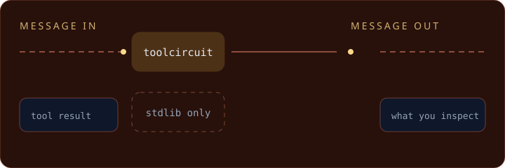

Install
consolepip install toolcircuit
Use
pythonfrom toolcircuit import CircuitOpen, Policy, ToolCircuit
circuit = ToolCircuit(
default=Policy(failure_threshold=3, cooldown=30),
policies={"search": Policy(failure_threshold=2, cooldown=120)},
)
def call_tool(name, tool, **arguments):
try:
return circuit.call(name, tool, **arguments)
except CircuitOpen as error:
return {"error": str(error), "retry_after": error.retry_after}
except Exception as error:
return {"error": f"{name} failed: {error}"}
Reading it back:
pythoncircuit.state("search") # 'closed' | 'open' | 'half-open'
circuit.allow("search") # False while open
circuit.failures("search") # consecutive failures
circuit.retry_after("search") # seconds until the next trial
circuit.report() # {"search": {"state": "open", "failures": 3, …}}
circuit.reset() # new run
How the states work
| state | meaning | calls allowed |
|---|---|---|
closed | healthy, failures below the threshold | yes |
open | threshold reached | no, CircuitOpen with a wait time |
half-open | cooldown has passed | one trial |
A success anywhere closes the circuit and resets the failure count. A failure in half-open reopens it for another full cooldown — the service had its chance.
The clock is injectable, which is how the tests avoid sleeping:
pythonnow = 0.0
circuit = ToolCircuit(clock=lambda: now)
Rules
- The breaker is per tool name, per process. A shared breaker across workers needs a
shared store, which is a different library on purpose: a breaker that needs a network round trip is a breaker that breaks the run when that network is down.
callre-raises the original exception after counting it, so your own error handling
keeps working; only the refusal case is a new exception type.
- Count only failures that say something about the service. A bad argument is not an
outage, so catch that before calling call, not after.
cooldownis a floor, not a schedule: nothing wakes up to close the circuit, it closes
on the first success after a cooldown, or on reset().
Limits
- No exponential growth of the cooldown between reopens, and no jitter. If you need
either, wrap Policy and replace the breaker object.
- No bulkheads or concurrency limits: this decides whether to call, not how many at
once.
- State dies with the process. That is the right default for a run, and the wrong one for
a long-lived service — persist report() if you need that.
Development
consolepython -m venv .venv
.venv/bin/pip install -e ".[test]"
.venv/bin/pytest
License
MIT.